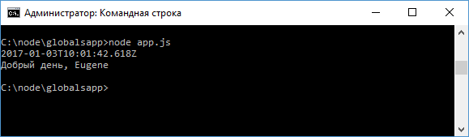

Объект global и глобальные переменные
Node.js предоставляет специальный объект global,
который предоставляет доступ к глобальным, то есть доступным из каждого модуля
приложения, переменным и функциям. Примерным аналогом данного объекта в
javascript для браузера является объект window. Все доступные глобальные объекты
можно посмотреть в документации.
Для примера создадим следующий модуль
greeting.js:
let
currentDate = new Date();
global.date = currentDate;
module.exports.getMessage = function(){
let hour = currentDate.getHours();
if(hour >16)
return "Добрый вечер, " + global.name;
else if(hour >10)
return
"Добрый день, " + name;
else
return "Доброе утро, " +
name;
}
Здесь, во-первых, происходит установка глобальной
переменной date: global.date = currentDate; Во-вторых, в модуле получаем
глобальную переменную name, которая будет установлена из вне. При этом
обратиться к глобальной переменной name мы можем через объект global:
global.name, либо просто через имя name, так как переменная глобальная.
Определим следующий файл приложения app.js:
const
greeting = require("./greeting");
global.name = "Eugene";
global.console.log(date);
console.log(greeting.getMessage());
Здесь устанавливаем глобальную переменную name, которую мы получаем в модуле greeting.js. И также выводим на консоль глобальную переменную date. Причем все глобальные функции и объекты, например, console, также доступны внутри global, поэтому мы можем написать и global.console.log(), и просто console.log(). Запустим файл app.js:

Назад: работа с модулями стр.2 | Далее: ассинхронность в NodeJs
window
document
browser